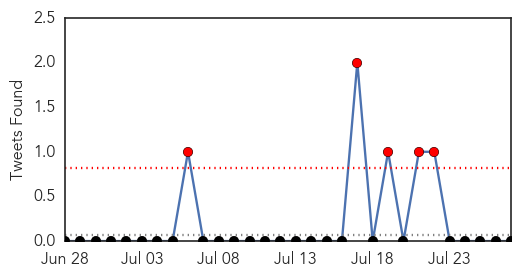
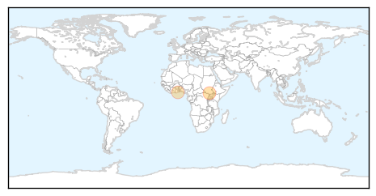

Influenza
30-Day Web Trend
1 alerts, 0 warnings

30-Day Twitter Trend
0 alerts, 0 warnings

Article Locations

Article Confidences

Top Articles:
- 0.996
- Flu arrives on the Coast
- 0.994
- Some vaccines support evolution of more-virulent viruses
- 0.993
- Some vaccines support evolution of more-virulent viruses
- 0.988
- Advocacy for Animals
- 0.987
- ‘Leaky’ Vaccines Can Produce Stronger Versions of Viruses
- 0.881
- Should you soldier on at work?
- 0.864
- New strain of dog flu causes concern in US
- 0.818
- Germany, Taiwan, Vietnam report avian flu outbreaks
- 0.751
- July 27, 2015 Archives
Top Tweets:
-
No tweets found for Jul 27, 2015
Cholera
30-Day Web Trend
0 alerts, 0 warnings
30-Day Twitter Trend
3 alerts, 0 warnings

Article Locations
Article Confidences

Top Articles:
Top Tweets:
-
No tweets found for Jul 27, 2015